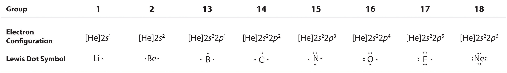

At the beginning of the 20th century, the American chemist G. N. Lewis (1875–1946) devised a system of symbols—now called Lewis electron dot symbolsA system that can be used to predict the number of bonds formed by most elements in their compounds., often shortened to Lewis dot symbols—that can be used for predicting the number of bonds formed by most elements in their compounds (Figure 8.6 "G. N. Lewis and the Octet Rule"). Each Lewis dot symbol consists of the chemical symbol for an element surrounded by dots that represent its valence electrons. Cesium, for example, has the electron configuration [Xe]6s1, which indicates one valence electron outside a closed shell. In the Lewis dot symbol, this single electron is represented as a single dot:
Figure 8.6 G. N. Lewis and the Octet Rule

(a) Lewis is working in the laboratory. (b) In Lewis’s original sketch for the octet rule, he initially placed the electrons at the corners of a cube rather than placing them as we do now.
To write an element’s Lewis dot symbol, we place dots representing its valence electrons, one at a time, around the element’s chemical symbol. Up to four dots are placed above, below, to the left, and to the right of the symbol (in any order, as long as elements with four or fewer valence electrons have no more than one dot in each position). The next dots, for elements with more than four valence electrons, are again distributed one at a time, each paired with one of the first four. Fluorine, for example, with the electron configuration [He]2s22p5, has seven valence electrons, so its Lewis dot symbol is constructed as follows:
The number of dots in the Lewis dot symbol is the same as the number of valence electrons, which is the same as the last digit of the element’s group number in the periodic table. Lewis dot symbols for the elements in period 2 are given in Figure 8.7 "Lewis Dot Symbols for the Elements in Period 2".
Lewis used the unpaired dots to predict the number of bonds that an element will form in a compound. Consider the symbol for nitrogen in Figure 8.7 "Lewis Dot Symbols for the Elements in Period 2". The Lewis dot symbol explains why nitrogen, with three unpaired valence electrons, tends to form compounds in which it shares the unpaired electrons to form three bonds. Boron, which also has three unpaired valence electrons in its Lewis dot symbol, also tends to form compounds with three bonds, whereas carbon, with four unpaired valence electrons in its Lewis dot symbol, tends to share all of its unpaired valence electrons by forming compounds in which it has four bonds.
Figure 8.7 Lewis Dot Symbols for the Elements in Period 2
Lewis’s major contribution to bonding theory was to recognize that atoms tend to lose, gain, or share electrons to reach a total of eight valence electrons, called an octet. This so-called octet ruleThe tendency for atoms to lose, gain, or share electrons to reach a total of eight valence electrons. explains the stoichiometry of most compounds in the s and p blocks of the periodic table. We now know from quantum mechanics that the number eight corresponds to one ns and three np valence orbitals, which together can accommodate a total of eight electrons. Remarkably, though, Lewis’s insight was made nearly a decade before Rutherford proposed the nuclear model of the atom. An exception to the octet rule is helium, whose 1s2 electron configuration gives it a full n = 1 shell, and hydrogen, which tends to gain or share its one electron to achieve the electron configuration of helium.
Lewis dot symbols can also be used to represent the ions in ionic compounds. The reaction of cesium with fluorine, for example, to produce the ionic compound CsF can be written as follows:
No dots are shown on Cs+ in the product because cesium has lost its single valence electron to fluorine. The transfer of this electron produces the Cs+ ion, which has the valence electron configuration of Xe, and the F− ion, which has a total of eight valence electrons (an octet) and the Ne electron configuration. This description is consistent with the statement in Chapter 7 "The Periodic Table and Periodic Trends" that among the main group elements, ions in simple binary ionic compounds generally have the electron configurations of the nearest noble gas. The charge of each ion is written in the product, and the anion and its electrons are enclosed in brackets. This notation emphasizes that the ions are associated electrostatically; no electrons are shared between the two elements.
As you might expect for such a qualitative approach to bonding, there are exceptions to the octet rule, which we describe in Section 8.6 "Exceptions to the Octet Rule". These include molecules in which one or more atoms contain fewer or more than eight electrons. In Section 8.5 "Lewis Structures and Covalent Bonding", however, we explain how to form molecular compounds by completing octets.
One convenient way to predict the number and basic arrangement of bonds in compounds is by using Lewis electron dot symbols, which consist of the chemical symbol for an element surrounded by dots that represent its valence electrons, grouped into pairs often placed above, below, and to the left and right of the symbol. The structures reflect the fact that the elements in period 2 and beyond tend to gain, lose, or share electrons to reach a total of eight valence electrons in their compounds, the so-called octet rule. Hydrogen, with only two valence electrons, does not obey the octet rule.
The Lewis electron system is a simplified approach for understanding bonding in covalent and ionic compounds. Why do chemists still find it useful?
Is a Lewis dot symbol an exact representation of the valence electrons in an atom or ion? Explain your answer.
How can the Lewis electron dot system help to predict the stoichiometry of a compound and its chemical and physical properties?
How is a Lewis dot symbol consistent with the quantum mechanical model of the atom described in Chapter 6 "The Structure of Atoms"? How is it different?
Lewis dot symbols allow us to predict the number of bonds atoms will form, and therefore the stoichiometry of a compound. The Lewis structure of a compound also indicates the presence or absence of lone pairs of electrons, which provides information on the compound’s chemical reactivity and physical properties.